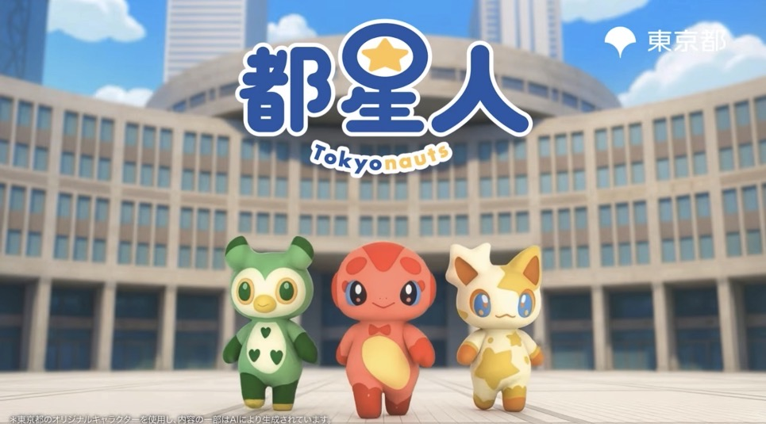

概要
絵コンテとラフの構図からAIツールを使い画像生成から動画作成、サムネイル作成を行いました。
制作のポイント
画質を保つため、一発で生成できるプロンプト作成を行いました。
また、細かく調整を繰り返し、要望にあう構図や世界観・クオリティ担保を重視し制作しました。
背景、建造物（外観・内観）、小物、人物、カットごとの視点等、雰囲気を統一するための工夫を行いつつ
短納期対応のため、AI生成と編集での見切りをつけて制作を行いました。